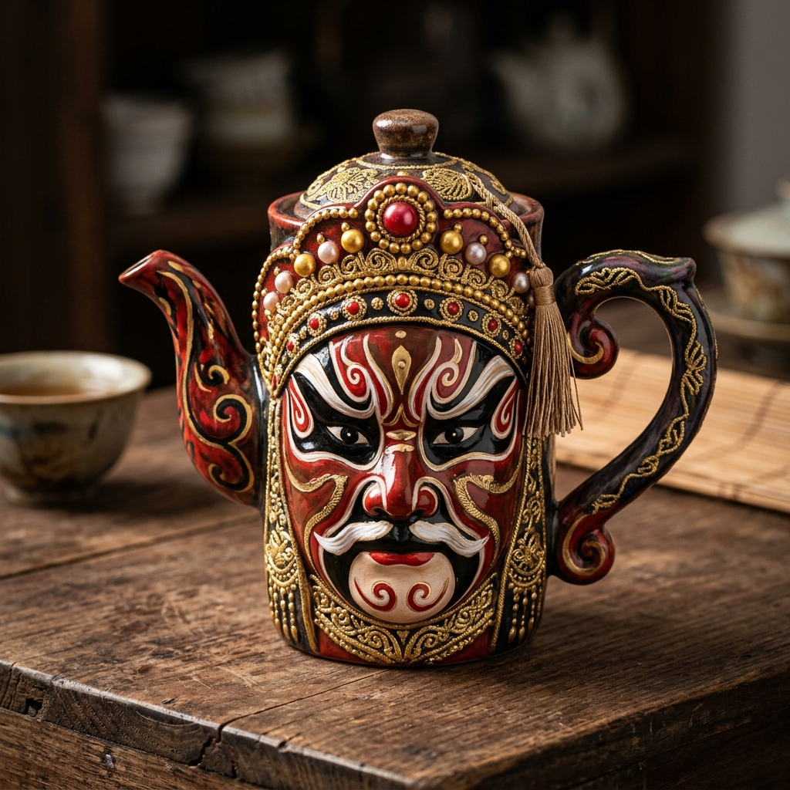
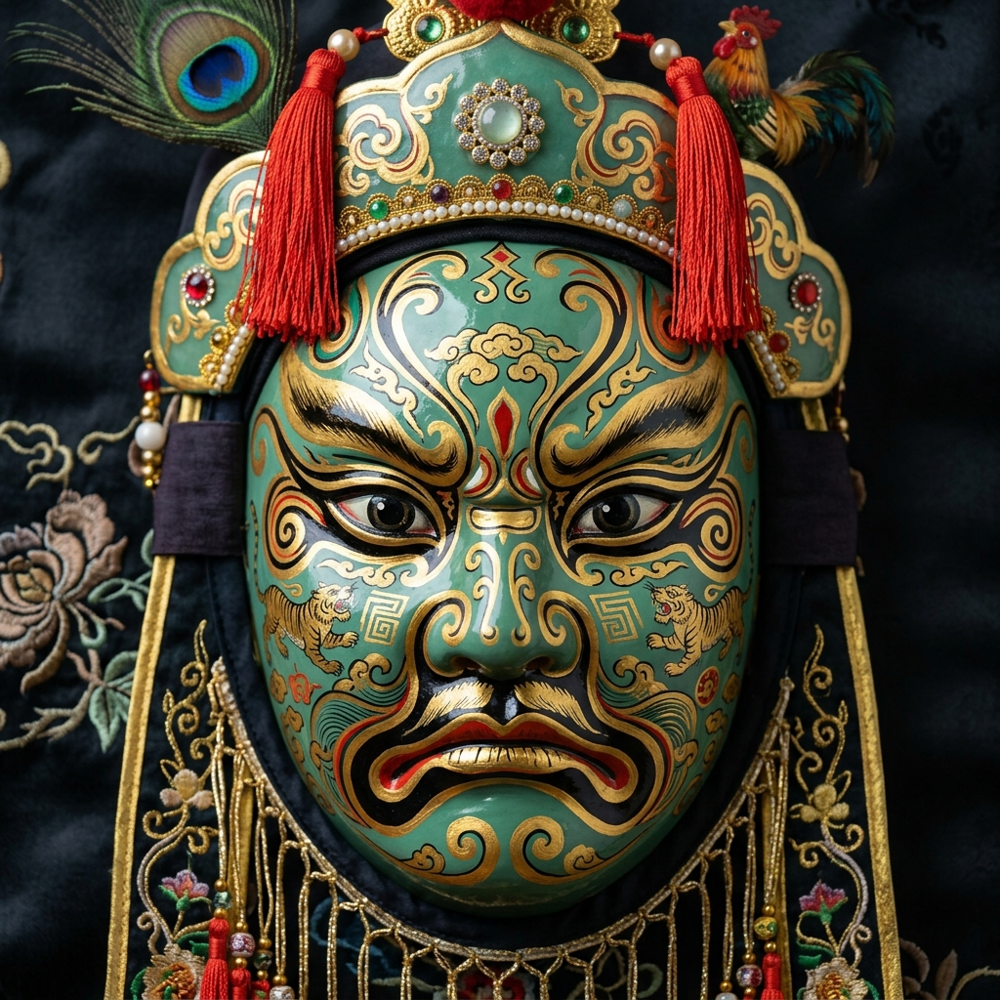

四川省川剧院
芙蓉国粹 蜀戏冠天下
百年川剧戏楼 · AI 智能耳机双语同声传译与非遗文化
入场 · 剧场介绍
戴上耳机，按您选择的语言收听剧场介绍与观演须知
智能伴游 · 有问必答
剧院历史、剧目典故、观演服务，随时提问
今日经典演出现场节目单
茶楼暖场 · 盖碗茶与打趣
老成都盖碗茶道展示，皮金打趣拉开戏楼热场序幕。
五行当合演 · 昆高胡弹灯
生旦净末丑五行当齐登台，演绎川剧五大声腔奇韵。
第一篇章《三国风云》
关羽张飞武生拔剑靠旗，精彩绝伦的川剧枪牌武打。
第二篇章《水浒江湖》
水浒英雄豪情开唱，结合快步与褶子戏身段。
第三篇章《红楼清梦》
青衣与花旦水袖凤冠流转，高腔帮腔缠绵悱恻。
压轴绝技《变脸吐火与滚灯》
大师吐火瞬间与《皮金滚灯》说唱打趣压轴高潮。
《皮金滚灯》开场经典打趣对白
CN 川剧名家原音"来嘛来嘛，各位老板，各位嬢嬢，各位帅哥美女，往里坐。我们这个茶楼有三热：茶热，锣鼓热，老板娘脾气热。前两个可以续，后一个最好不要点。坐近点，坐近点。坐得拢才听得清，坐得散，我还以为你们是来开股东会的。"
"Come on in, everyone—bosses, ladies, handsome gentlemen—have a seat inside. Our teahouse is famous for three things that are "hot": the tea, the gongs and drums, and the proprietress's temper. You can get refills on the first two, but you'd best steer clear of the third. Come closer, come closer. You need to sit close to hear properly; if you're too spread out, I'll think you're here for a shareholders' meeting."
"这位美女坐这边，这边光线好，拍照显年轻。"
"You, miss—sit over here; the lighting is great, and it makes you look younger in photos."
"你也坐这边。放心，显年轻这个事情，主要靠她，你负责帮她拿包。"
"You sit here too. Don't worry—looking young is mostly up to her; your job is just to hold her bag."
"来了来了。你们看，说曹操曹操到，说老板娘，账本到。"
"Here we go. Speak of the devil—or rather, speak of the proprietress, and here comes the ledger."
四川省川剧院 · 数字资产与 AI 提示词 IP 授权库
汇聚四川省川剧院非遗华服、名角人物、绝技脸谱、古戏场与说唱音频资产。包含 AI 旅拍提示词元数据，支持点击在线商业授权申请
【AI 华服】武生靠旗战袍
一键换装核心四川省川剧院武生经典靠旗铠甲，金龙刺绣与红缎战裙 3D 数字渲染 Assets。
 IP-COSTUME-002
可商业授权
IP-COSTUME-002
可商业授权
【AI 华服】花旦水袖凤冠
一键换装核心非遗蜀绣水袖与点翠凤冠头饰，提供高帧率水袖甩动物理粒子元数据。
 IP-MASTER-001
可商业授权
IP-MASTER-001
可商业授权
【名角 IP】变脸大师 (吐火瞬间)
名角同框核心四川省川剧院变脸名角绝技吐火肖像与火光渲染模板，支持数字人合影。
 IP-MASTER-002
可商业授权
IP-MASTER-002
可商业授权
【名角 IP】四大名旦同台开唱
名角同框核心四川省川剧院四大名旦同台开唱名场面，包含折扇与高腔姿态库。
 IP-MASK-001
可商业授权
IP-MASK-001
可商业授权
【非遗脸谱】火凤金枪矢量纹样
纹样资产朱红火凤与帝王金枪脸谱高精度矢量线稿与漆艺色彩 Asset。
 IP-MASK-002
可商业授权
IP-MASK-002
可商业授权
【非遗脸谱】关羽张飞包公脸谱
纹样资产三国豪杰关羽红脸、张飞黑脸与包公铁面竹编彩绘面谱 Asset。

IP-STAGE-001 可商业授权【古戏场】古蜀雕花戏台 3D
场景资产百年雕花古戏台虚幻 5 3D 模型与光影采样 Asset，支持游戏元宇宙。
【音频 IP】《皮金》说唱音轨
音频资产名家《皮金滚灯》经典说唱打趣音轨，含中英双语同传采样。
 IP-MASK-003
可商业授权
IP-MASK-003
可商业授权
【AI 脸谱】金龙炽火纹样
Gemini 生成朱红底色与漆艺金龙缠绕，高光与漆器质感 3D 浮雕纹样 Asset。
【AI 脸谱】蓝虎银焰面谱
Gemini 生成深海宝蓝与银虎勾勒，经典川剧武将刚猛冷峻面谱 Asset。

IP-MASK-005 可商业授权【AI 脸谱】翡翠战神脸谱
Gemini 生成碧绿翡翠与金描纹饰，三国大将面谱艺术 3D 渲染 Asset。


🏮 场次直播 · 收听席
正在直播
↻ 刷新字幕语言
原文 + 所选语言译文对照实时字幕
0 条字幕将在此实时滚动
实时翻译会话
对方说话时字幕自动出现在上方
四川省川剧院 · 戏迷贵宾 尊享会员
账号 ID: SC-OPERA-202688 | 注册时间: 2026-08-08